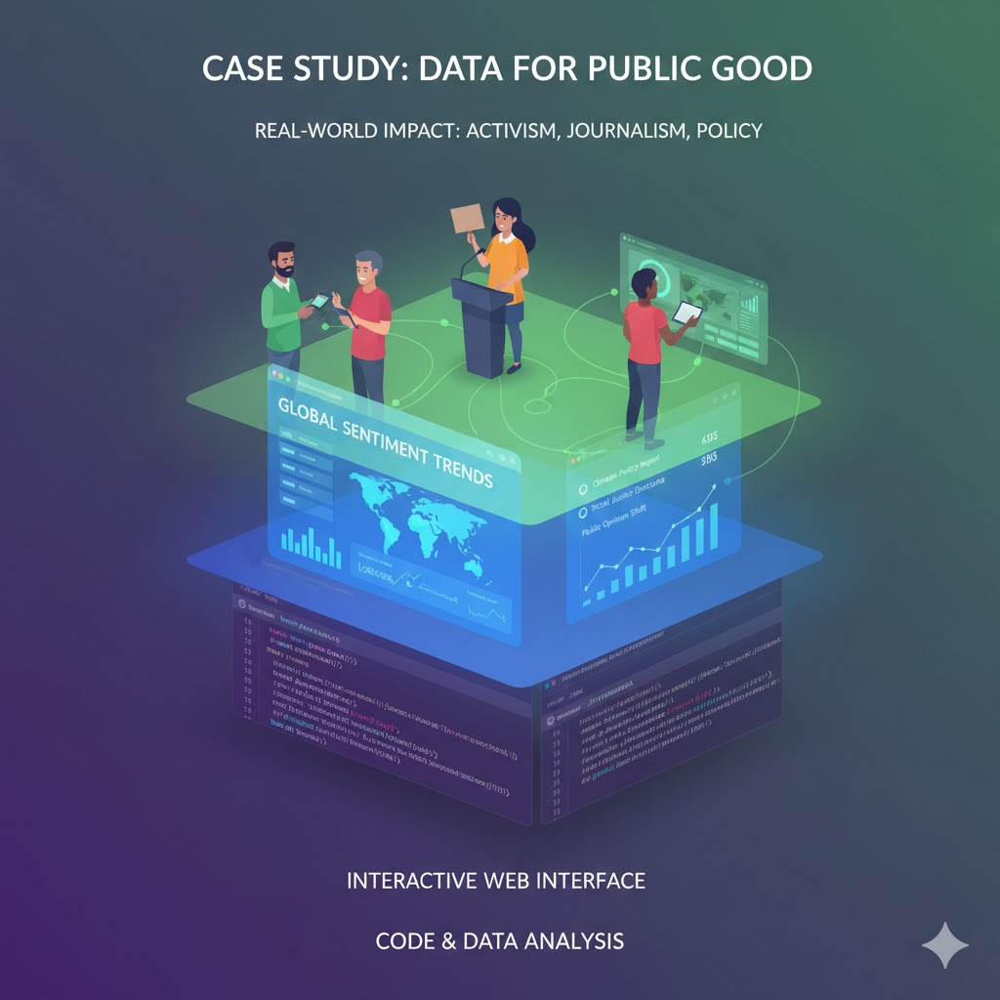

From Analysis to Action
Research locked away from the public
Public Digital Scholarship
Making scholarly and cultural insights accessible, engaging, and actionable for audiences beyond academia.
Project collects, analyzes, and visualizes data on police killings in the US—making invisible patterns visible to the public.
A long history of public engagement
Analysis + Web Skills = Public Impact
Data → Analysis → Visualization → Public Web Interface
Low barriers, global reach, full control
Achievable projects with HTML/CSS
Every technical choice is a rhetorical choice
Contributing to the cultural record
Ready to build
"What cultural insight from your Python work deserves a public audience? Who needs to see it?"
Introduction to HTML - The Language of the Web
Come to next class ready to start building. Bring your curiosity about how websites work.
You already have valuable insights from your text analysis work. Now we're learning how to share them with the world.
Digital humanities isn't just about understanding culture through code—it's about using code to contribute to culture.